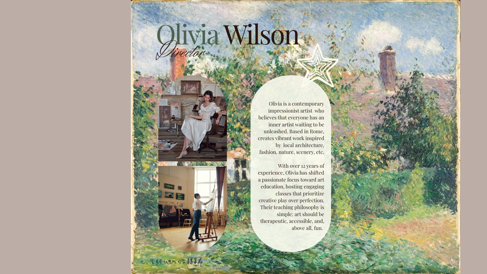

Our Faculty & Structure
Get to know the passionate educators guiding your creative journey and see how our academic community is structured.

Studio Instructional Directory (Nested List)
- Fine Arts Department Chairs
- Sarah Jenkins, M.F.A. — Director of Studio Operations
- Specialization: Classical Oil Painting
- Years Teaching: 12+ Years
- Marcus Vance, B.F.A. — Ceramics Studio Lead
- Specialization: Wheel-thrown pottery & glazing
- Years Teaching: 8 Years
- Sarah Jenkins, M.F.A. — Director of Studio Operations
- Adjunct Faculty & Support Staff
- Elena Rostova — Introductory Drawing Instructor
- David Choi — Studio Logistics Coordinator